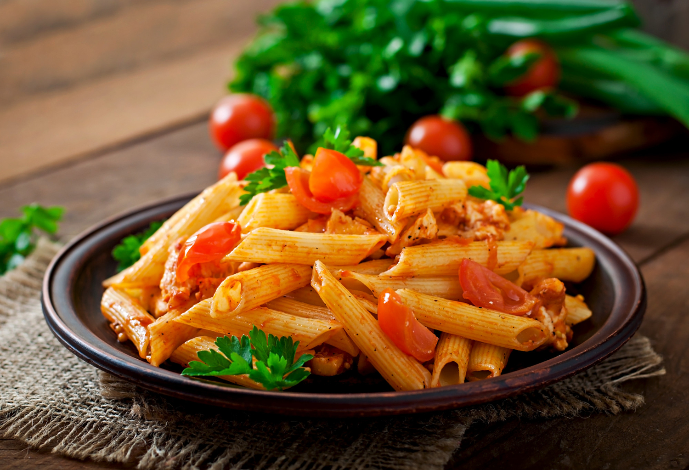

Lasagna
Description
Lasagna is a classic Italian dish that consists of layers of pasta, rich meat sauce, creamy ricotta cheese mixture, and melted mozzarella cheese. This hearty and comforting dish is perfect for family dinners and gatherings, offering a delightful blend of flavors and textures. The layers of tender lasagna noodles interspersed with a savory meat sauce and creamy cheese make every bite a delicious experience.
This lasagna recipe includes a homemade meat sauce made with ground beef, tomatoes, and Italian herbs, providing a robust and flavorful base. The cheese mixture, combining ricotta, mozzarella, and Parmesan, adds a creamy and cheesy goodness that complements the sauce perfectly.
Ingredients:
- 12 lasagna noodles
- 1 pound ground beef
- 1 onion, finely chopped
- 3 cloves garlic, minced
- 1 can (28 ounces) crushed tomatoes
- 2 cans (6 ounces each) tomato paste
- 1 can (15 ounces) tomato sauce
- 1/2 cup water
- 2 tablespoons sugar
- 1 teaspoon dried basil leaves
- 1 teaspoon Italian seasoning
- 1 tablespoon salt, divided
- 1/2 teaspoon ground black pepper
- 4 cups ricotta cheese
- 1 egg
- 3/4 cup grated Parmesan cheese
- 2 tablespoons chopped fresh parsley
- 4 cups shredded mozzarella cheese
Steps:
- Preheat the oven: Preheat your oven to 375°F (190°C).
- Cook the noodles: Bring a large pot of salted water to a boil. Cook the lasagna noodles according to the package instructions until al dente. Drain and lay them flat on a sheet of parchment paper to prevent sticking.
- Prepare the meat sauce: In a large skillet over medium heat, cook the ground beef until browned. Add the chopped onion and minced garlic, and sauté until the onion is translucent. Stir in the crushed tomatoes, tomato paste, tomato sauce, and water. Season with sugar, basil, Italian seasoning, 1 tablespoon salt, and black pepper. Simmer the sauce for 30 minutes, stirring occasionally.
- Prepare the cheese mixture: In a large bowl, combine the ricotta cheese, egg, 1/2 cup Parmesan cheese, and chopped parsley. Mix well until smooth.
- Assemble the lasagna: Spread 1 cup of the meat sauce on the bottom of a 9x13 inch baking dish. Place a layer of lasagna noodles over the sauce. Spread one-third of the ricotta cheese mixture over the noodles, followed by 1 cup of mozzarella cheese. Repeat the layers twice, ending with a layer of noodles and the remaining meat sauce. Sprinkle the remaining mozzarella cheese and Parmesan cheese on top.
- Bake the lasagna: Cover the baking dish with aluminum foil, ensuring it doesn't touch the cheese. Bake in the preheated oven for 25 minutes. Remove the foil and bake for an additional 25 minutes, or until the cheese is bubbly and golden brown.
- Let it rest and serve: Allow the lasagna to rest for 15 minutes before slicing. This helps the layers set and makes it easier to serve. Enjoy your delicious lasagna with a side salad and garlic bread!
Back to Homepage